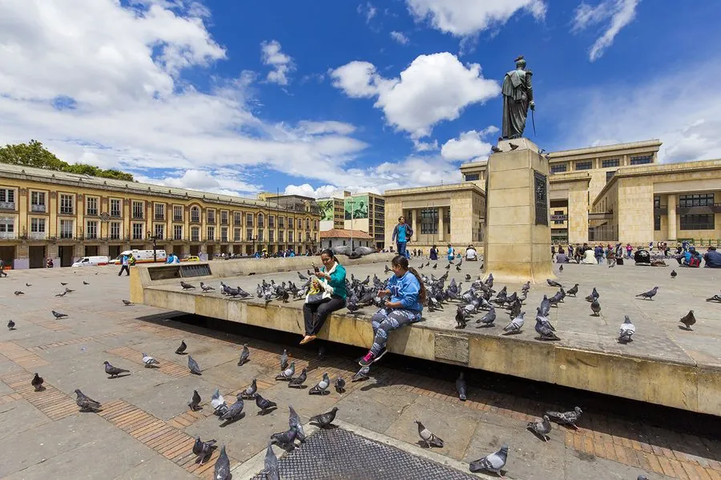
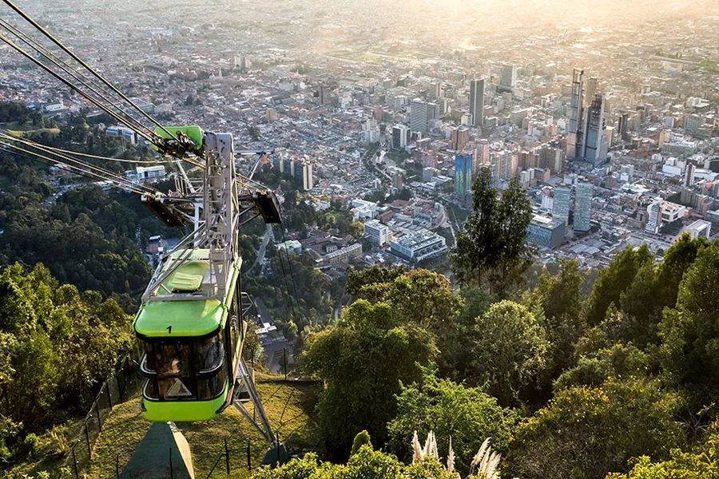

Dag 1–2 · Aankomst · Hoofdstad · Hoogte acclimatiseren
Na aankomst in terminal 1 (internationale vluchten) naar de bagageband. Daarna door de douane — rij aan bij de "Extranjeros" rij. Buiten het aankomstgebouw: meteen Uber openen, wacht op de aangewezen Uber-zone (volg borden "App Taxis"). Rijtijd naar Botanico Hostel: ~35–50 min afhankelijk van file.
Uber-zone: Bij El Dorado zijn er taxichauffeurs die toeristen actief benaderen — soms agressief. Negeer hen volledig. Loop naar buiten en open de Uber-app. Er is een duidelijk aangeduide Uber-zone buiten de terminal.
Cabify: Alternatief voor Uber. Beide zijn veilig en betrouwbaar. Prijs naar centrum: ~COP 30.000–50.000 (±€7–12).
Bagage: Houd koffers bij je in de taxi. Botanico Hostel heeft 24u receptie — inchecken ook 's avonds geen probleem.
Hotel: Botanico Hostel · Carrera 2 #9-87 · La Candelaria · Tel. +57 1 7457572 · geboekt 18–20 nov, €150 · uitchecken vr-ochtend
Activeer meteen de e-sim zodat je navigatie en Uber de volgende dag werken. Daarna rustig inchecken en uitpakken. Dag 1 is puur aankomst — geen verplicht programma.
iPhone: Instellingen → Mobiel → SIM toevoegen → gebruik QR-code van SIM1 Global e-mail. Vervolgens: Verbindingen → SIM beheer → mobiel internet → zet op SIM1 Global.
Data: Colombia is gedekt. WhatsApp, Google Maps, Uber werken meteen na activatie.
Bellen: Je Belgisch nummer blijft werken voor inkomende oproepen. Outgoing = bellen via WhatsApp aanbevolen.
Geen grote avonturen op dag 1 — je bent 11 uur gevlogen en bent op 2640 m hoogte. Eet iets dicht bij het hotel. Botanico heeft een jungle-tuin en gemeenschappelijke keuken. Alternatieven op wandelafstand:
La Puerta Falsa (5 min): Sinds 1816 — de oudste en kleinste plek voor een chocolate completo: warme chocolademelk, brood, almojábana en Colombiaanse kaas. Ook de beste tamales van Bogotá.
La Hamburguesería: 5 min lopen. Eenvoudig en lekker — goede Colombiaanse hamburgers en papas fritas. Ideal voor de eerste avond.
El Bandido: Traditionele Colombiaanse keuken vlakbij. Soep, bandeja paisa, arepas. Budget-friendly.
Tip: Drink die eerste avond geen alcohol — hoogteverandering + alcohol = slechte nacht. Water en aromáticas (kruidenthee) zijn beter.
Als je dag 2 wil starten met een echte Bogotá-ervaring: ga vroeg naar Mercado de Paloquemao. Eén van de grootste versmarkten van de stad — exotisch tropisch fruit, gigantische bloemen, en lokale ontbijtbars. Tony Bourdain dronk hier versgeperst sinaasappel-wortelsap als remedie tegen de hoogte.
Paloquemao (Mercado de Paloquemao): Open elke dag vanaf ~6u. De bloemenhal is spectaculair — honderden soorten tropische bloemen. Fruit: maracuyá, lulo, guanábana, mamoncillo — probeer alles. Vraag om een salpicón (gemengd tropisch fruit in sap).
Arepas ter plekke: Aan de randen van de markt zijn vrouwen die arepas bakken op steenkolen. Traditioneel ontbijt voor COP 2.000–3.000 (minder dan €1).
Daarna Puerta Falsa: Uber vanuit Paloquemao naar La Candelaria (~10 min). Puerta Falsa is een eeuwenoud café op Calle 11 vlakbij Plaza Bolívar. Bestel: chocolate completo (warme chocolademelk + brood + kaas + tamale) — dit is het klassieke Bogotá-ontbijt.
Openingstijden Puerta Falsa: Ma–za 7u–21u · zo 8u–20u. Vroeg gaan = geen rij.
De Davivienda is de beste plek in Bogotá om pesos op te nemen zonder commissie. Maximum €400 (2.000.000 pesos) per keer. Neem ook je dollars mee ($300) voor wisselkantoren later onderweg.
Het beste goudmuseum van Zuid-Amerika met een indrukwekkende collectie pre-Colombiaanse goudkunst van de Muisca. Kleine inkom, groot wow-effect. Wat je hier niet afmaakt, doe je op dag 23.
📖 Lees meer: 🏺 Museo del Oro →
De oudste wijk van Bogotá — kleurrijke koloniale gebouwen, straatkunst van internationaal bekende kunstenaars, Plaza de Bolívar, de kathedraal. Puerta Falsa voor een chocolate completo. Geen agenda — wat je niet ziet is er nog op dag 23.
Plaza de Bolívar: Het historische centrale plein — kathedraal, Capitolio Nacional, Liévano-paleis. Vrij toegankelijk.
Straatkunst: La Candelaria heeft legale straatkunst overal. Bekende namen: Stinkfish, Toxicómano, os Gemeos (Braziliaans duo). Wandel gewoon door de wijk.
Puerta Falsa: Piepklein historisch café vlakbij Plaza Bolívar. Al eeuwen beroemd om chocolate completo + tamales bogotanos. Tony Bourdain's keuze.
Museo Botero: Gratis museum met Fernando Botero's ronde figuren en internationale kunst — vlakbij het Goudmuseum.

Kabelbaan naar de heilige berg (€7 p.p. retour) voor het beste panorama over de uitgestrekte hoofdstad. Voormiddag gaan om rijen te vermijden. Combineer met de rest van dag 2 of bewaar voor dag 23.
📖 Lees meer: 🚡 Monserrate →De BBC (Bogotá Beer Company) is de beste craft bierbar van de stad. Beste vestiging: Parque de la 93 — hip plein in het noorden, levendig in de avond. Probeer de huisbieren: Septimazo IPA, Macondo English Stout, Monserrate Roja.
BBC (Bogotá Beer Company) · Parque de la 93: Grote terras, goede sfeer. Beste vestiging van de keten. Must-try: Monserrate Roja (amber) en Macondo Stout.
Tango Bar: Sfeervolle bar in La Candelaria — dichter bij het hotel. Goede selectie lokale bieren + live muziek in het weekend.
Cervecería Gigante: Craft brewery in Chapinero. Klein, authentiek, wisselende seizoensbiertjes. Goed als je iets wil dat meer off-the-beaten-path is.
Tip: Uber naar Zona Rosa voor BBC — en neem daarna Uber terug. Niet te laat op pad op dag 2 — morgen uitchecken om 10:15 voor de vlucht naar Armenia.
Misschien het meest iconische restaurant van Colombia. Chaotisch, kleurrijk, gezellig — een hele belevenis. Het origineel zit in Chía (45 min buiten centrum), maar er is een grotere vestiging in Bogotá centrum. Reserveren is bijna verplicht.
Origineel in Chía: Het meest legendarische — enorm gebouw, 4 verdiepingen, live muziek, dansende kelners. Entree COP 60.000 p.p. + eten/drinken. Uber heen en terug (~45 min). Reserveer via andrescarnederes.com.
Bogotá centrum vestiging: Kleiner maar nog steeds spectaculair. Makkelijker bereikbaar als je niet tot Chía wil rijden. Ook reserveren aanbevolen.
Must-order: Lomo al Trapo (ossenhaas gewikkeld in leem en gebakken op steenkolen), Chicharrones (gefrituurde varkensbuik), Arepa de Choclo (zoete maïskoek met kaas).
Drinken: Probeer een limonada de coco of een lokale rum cocktail. Het restaurant is ook beroemd om zijn uitgebreide drankkaart.
Sfeer: Kleurrijke kitsch, muziek, show — geen rustig diner maar een beleving. Reken op 3+ uur.
De bekendste muurschildering van de stad: een dakloos koppel dat elkaar kust, naar een foto uit de vroegere achterbuurt El Bronx. Vértigo Graffiti schilderde het in 2013 over tien verdiepingen van een flatgebouw op de hoek Calle 26 / Carrera 13A — precies de weg die je Uber vanaf El Dorado naar het centrum neemt. Hou de linker- en rechterkant in het oog als je de Calle 26 oprijdt.
In 2011 schoot de politie de jonge graffitikunstenaar Diego Felipe Becerra dood. De zaak leidde tot de veroordeling van agenten én tot de decriminalisering van graffiti. Sindsdien is Bogotá een van de grote street-art-steden van de wereld: La Candelaria heeft de bekendste werken, het centrum het scherpere, politieke werk.
Extra: het Distrito Graffiti in Puente Aranda (Calle 9 / Carrera 53F, TransMilenio-halte met dezelfde naam) is een oude loodsenbuurt die volledig aan muralisten werd gegeven.
Op 20 juli 1810 vroegen enkele criollos (in de kolonie geboren Spanjaarden) aan de Spaanse koopman González Llorente om een sierlijke vaas te lenen voor een diner. Hij weigerde, de vaas sneuvelde, er volgde een vechtpartij op straat en de stad kwam in opstand. Daarom is 20 juli nog altijd de Colombiaanse onafhankelijkheidsdag.
Het huis op de noordoosthoek van het plein is nu het Museo de la Independencia. Het pronkstuk: de gebroken vaas zelf.
Hier zou in 1538 de eerste mis van Bogotá zijn opgedragen, in een kapel van leem en stro. Het huidige gebouw (1807–1823, na een aardbeving in 1785) beslaat meer dan een halve hectare. In de kapel rechts van het hoofdaltaar, gewijd aan Sint-Elisabeth van Hongarije (de patroonheilige van de stad), ligt stichter Gonzalo Jiménez de Quesada.
Ernaast: de barokke Capilla del Sagrario (1660–1700) met schilderijen van Gregorio Vásquez, de grootste schilder van de koloniale tijd.
• Het Bolívar-beeld (1846, Pietro Tenerani) is het oudste openluchtbeeld van de stad — en favoriet bij de duiven.
• Het Capitolio kreeg zijn eerste steen rond 1848 maar was door alle politieke onrust pas in 1926 af. Architect Thomas Reed ontwierp ook het Museo Nacional.
• Het Palacio Liévano (1907, Franse stijl) is het stadhuis.
• De Casa de Nariño is genoemd naar Antonio Nariño, die stiekem de Franse mensenrechtenverklaring in het Spaans vertaalde en er twee keer voor de cel in ging. Wissel van de wacht: wo, vr en zo rond 15u30–16u (oostkant).
• Het Palacio de Justicia: zie de Narcos-pagina.
Twee straten van het plein, Calle 10. In september 1828 stonden er moordenaars aan de deur terwijl Bolívar in bad zat. Zijn minnares Manuela Sáenz waarschuwde hem en hield de samenzweerders aan de praat terwijl hij door het raam ontsnapte — sindsdien heet ze "de bevrijdster van de Bevrijder". Een Latijnse plaquette onder het raam vraagt je even stil te staan.
Tegenover: het Teatro Colón (1892). Manuela's eigen huis, een straat verder, is nu het Museo de Trajes Regionales (klederdracht).
Op 9 april 1948 werd de populaire liberale leider Jorge Eliécer Gaitán — gedoodverfde president — neergeschoten toen hij op de hoek van Carrera 7 en Avenida Jiménez naar buiten kwam om te lunchen. De dader werd ter plaatse gelyncht; de woede ontplofte in de Bogotazo: het halve centrum brandde af (de gidsen spreken van honderden tot 2.500 doden). Het was het begin van La Violencia, de burgeroorlog die het land decennia zou tekenen.
Een muur met gedenkplaten markeert de plek. Een jonge Fidel Castro was toevallig in de stad en ging volgens de Rough Guide mee wapens halen bij het politiekantoor in La Macarena.
Wie meer wil: het Casa Museo Gaitán (Calle 42 #15-52, Chapinero, gratis) toont zijn kostuum, het moordwapen en de echte voordeur waar hij uitkwam.
Landhuis uit 1800 aan de voet van Monserrate, in 1820 aan Bolívar geschonken; hij verbleef er 423 dagen verspreid over tien jaar. Beroemd om het zwaard dat de guerrillabeweging M-19 in 1974 stal als haar allereerste actie — pas in 1991 kwam het terug. Wat je nu ziet is volgens de Rough Guide een replica. Mooie tuin met varens en fonteinen.
⚠️ Op de wandeling tussen de Quinta en het Monserrate-station zijn overvallen gemeld: neem een Uber.
• San Francisco (1557–1621): de oudste bewaarde kerk van Bogotá, met het grootste vergulde altaarstuk van de stad en een houten mudéjar-plafond.
• La Veracruz (1546): het "Nationaal Pantheon" — hier liggen een tachtigtal onafhankelijkheidsstrijders die de Spanjaarden in 1816 fusilleerden.
• La Tercera (jaren 1760): altaren in walnoot en ceder.
Van binnen veel mooier dan van buiten, en gratis.
Gebouwd 1629–1674, sinds 1968 een museum. Het tongewelf is volledig bedekt met gouden bloemmotieven, met 148 schilderijen en beelden van heiligen op de muren. Het ticket geldt ook voor het Museo Colonial om de hoek, met 76 schilderijen van Gregorio Vásquez.
Meer dan 55.000 stukken. Op de derde verdieping ligt de Balsa Muisca: een gouden vlotje met figuurtjes, in 1969 gevonden bij Pasca. Het stelt de inhuldiging van een Muisca-leider op het meer van Guatavita voor — de oorsprong van de El Dorado-legende. Daarna word je in een donkere ronde zaal gezet (Sala de la Ofrenda) waar het licht langzaam aangaat en je omringd bent door honderden gouden voorwerpen.
Er zijn gratis rondleidingen van een uur (ook in het Engels) — de gidsen raden ze aan omdat de bordjes niet alles vertellen.
Gratis. Botero schonk in 2000 123 eigen werken plus zijn collectie van anderen: Picasso, Monet, Renoir, Miró, Chagall, Klimt en de Belg Paul Delvaux Zoek naar zijn Mona Lisa, de dikke bananen, een mollige Dood die zijn zeis voor een gitaar heeft geruild, en het kleine schilderij over het bloedbad van Mejor Esquina (1988). Medellín was jaloers: ze wilden deze collectie zelf.
Gebouwd in 1874 als panopticum-gevangenis in kruisvorm (ook van Thomas Reed). Na een grote renovatie in 2023 heropend voor de 200ste verjaardag. Bijzonder: in zaal 16 liggen de bijlen waarmee generaal Rafael Uribe Uribe in 1914 werd vermoord — het voorbeeld voor kolonel Aureliano Buendía in Honderd jaar eenzaamheid. Ook grote Botero's en een Juan Valdez-café in de tuin.
Staan uitgebreid op de Narcos-pagina.
Volgens een tweede theorie werd Bogotá niet aan de Plaza de Bolívar maar op dit pleintje gesticht; het was het centrum van de Muisca-nederzetting. Fontein en kerkje zijn replica's uit 1969. 's Avonds stromen de studenten toe. In het smalle Callejón del Embudo (Carrera 2, onder de boog met de jonglerende eenwieler) zitten de chicha-bars: gefermenteerde maïsdrank, ooit verboden, nu weer hip. Vrijdag 17u: Spaanstalige vertellers.
Koloniaal huis in La Candelaria met een patio vol lichtjes en een inheemse muurschildering. Traditionele Colombiaanse keuken zonder gourmetprijzen: mojarra in kokossaus, frijolada montañera (bonen met spek en pulled pork), ajiaco santafereño. Staat in de LP-lijst "maaltijden van je leven".
Decennialang werd de beste koffie uitgevoerd en dronken Colombianen dunne, zoete tinto. Het keerpunt: de eerste Juan Valdez opende in 2002 op de luchthaven El Dorado. Nu:
• Arte y Pasión (Candelaria): baristaschool, donker hout, goede pour-over.
• Divino Café: workshops en proeverijen.
• Café Casa Galería in de Callejón del Embudo.
• Café Matuca bij het Goudmuseum: koffie proeven zoals wijn.
• Azahar bij Parque de la 93 — "misschien de beste koffiebar van het land" (LP); vraag een flight van drie.
De Bogotá Beer Company begon in 2002 als één pub in de Zona Rosa en heeft nu meer dan 80 bars. In 2015 werd ze gekocht door AB InBev (Leuven). Colombianen noemen het spottend "de Starbucks van het bier", maar de bieren zijn goed: Septimazo IPA, Macondo-stout, Monserrate Roja.
• Ajiaco santafereño: kip-aardappelsoep met maïs, kappertjes, room en avocado.
• Tamales: kip, rijst en maïs in een bananenblad.
• Obleas: twee flinterdunne wafels met arequipe (karamel), soms met kaas en bramenjam — van straatkarretjes.
• Las onces: het namiddagmoment met chocolate santafereño — je doopt zachte kaas in de warme chocolademelk.
Het origineel ligt in Chía, 23 km ten noorden (richting Zipaquirá). Goedkoper dan Uber: een bus naar Chía vanuit TransMilenio-station Portal del Norte. De menukaart telt 75 pagina's; de gidsen raden aan gewoon een steak, arepa's en iets sterks te bestellen en de sfeer te laten komen.
Bogotá ligt op 2.600 m en kan het hele jaar koud en nat zijn. September–november is een van de twee natste periodes; eind december–januari is het zonnigst. Regenjas en warme laag mee op dag 1–2.
De kabelspoorweg rijdt vooral vóór de middag, de kabelbaan erna. Boven staat het beeld van de Señor Caído (de gevallen Christus, 17de eeuw), een groot bedevaartsoord. Bij helder weer zie je de kegel van de vulkaan Nevado del Tolima, 135 km verder. Het voetpad (1.500 treden) is mooi, maar de gidsen melden overvallen op de route: alleen op drukke momenten.
De Rough Guide is duidelijk: Parque de los Periodistas (tussen La Candelaria en het centrum) 's avonds mijden; La Perseverancia (ten noorden van La Macarena) ook overdag niet. In La Candelaria na donker enkel drukke straten, geen tunnels of onderdoorgangen.
Bogotá heeft een vijftigtal musea. Op zondag (en vooral de laatste zondag van de maand, gratis) staan er lange rijen. Jullie dagen zijn doordeweeks — perfect.
Bron: Lonely Planet Colombia (2023) en The Rough Guide to Colombia (2024), vertaald en samengevat. Prijzen, uren en sluitingen kunnen intussen veranderd zijn.